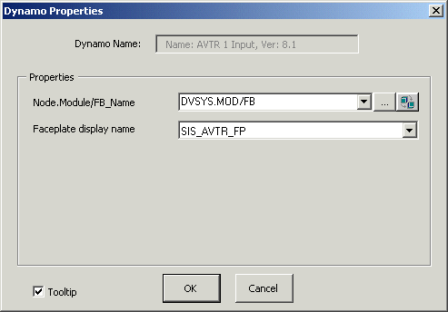

AVTR dynamo
The SIS dynamo sets contain four dynamos for the LSAVTR function block. The common voting arrangements (1oo2, 2oo3, 1oo1, 2oo2, and 1oo3) call for an LSAVTR block with one, two, or three input parameters. For these common cases, the user chooses a dynamo based on the following:
AVTR_1Input_ for a 1oo1 voter
AVTR_2Input_ for a 1oo2 or 2oo2 voter
AVTR_3Input_ for a 1oo3 or 2oo3 voter
The one- and two-input AVTR dynamos are similar but have one or two fewer rows than the three-input dynamo. When you add one of these dynamos to a picture, the Dynamo Properties dialog prompts you to enter the path to the function block. If you prefer to use a custom faceplate rather than the default faceplate, enter its name in the Faceplate display name field. The Dynamo Properties dialog is shown below:

The AVTR_3Input_ dynamo is shown below as it appears in Configure mode. (The descriptions, however, are for the behavior in Run mode.) The descriptions of the elements of the AVTR_2Input and AVTR_1Input_ dynamos are the same.
The following is the AVTR_3Input_ dynamo

The AVTR input dynamos from the frsSIS dynamo set are the same as the _Theme versions except the AVTR_ALERTS indicator is replaced by a faceplate button:
For voting arrangements with more than three inputs, one AVTR_3Input_ dynamo is used, plus an AVTR_InputX dynamo for each additional input needed. The AVTR_InputX dynamo is shown below:

Thus, for a 6oo8 voter, you would drag-and-drop one AVTR_3Input_ dynamo and then drag-and-drop the AVTR_InputX dynamo five times, positioning each beneath the existing input lines.